使用原生js的定时器实现自动切换，点击左右两边的按钮可实现手动切换，鼠标移出后继续自动切换
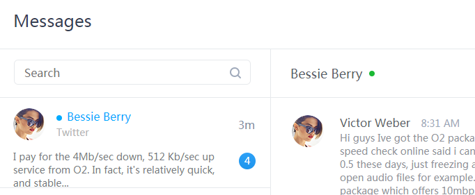 点击预览技能掌握
在学习中进步，在进步中学习
-
90%
HTML5
-
90%
Css3
-
80%
Javascript
-
60%
Vue
-
小demo系列(1)-JS小例子
- 社交网站的静态页面
- 购物车结算
- 拖动交换图片位置
- 自定义字体样式
- 图片跟随鼠标轨迹移动
- 商品分类筛选
- 无缝轮播
-
小demo系列(2)-CSS动画
- CSS实现图片切换
- 翻牌效果
- 纯css实现笑起来的猫
- 围绕中轴旋转的立方体
- 结合动画库实现登录框
-
小demo系列(3)-其他
- html+css绘制苹果电脑
- 伸缩相册
- JS实现星光闪烁
- 操作云盘文件夹
-
社交网站的静态页面
工具：css
-
购物车结算
工具：原生javascript
通过原生JavaScript处理单选和全选，以及数量的加减按钮的禁用，包括总价和结算按钮的处理。
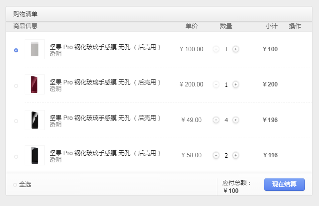 点击预览 -
拖动交换图片位置
工具：原生JS
这个效果主要结合运动框架，碰撞检测，勾股定理以及随机函数来实现，当两张图片碰到时，松手即可交换位置，点击左上角的随机按钮可实现随机交换位置。
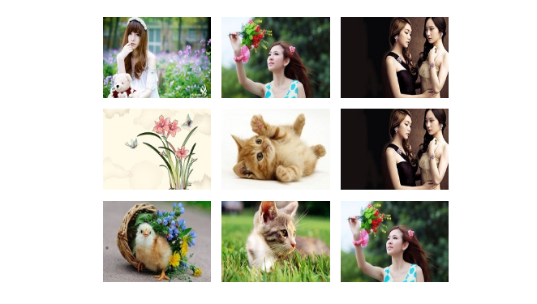 点击预览 -
自定义字体样式
工具：原生javascript
主要通过字符串和数组的方法来实现，当点击不同的字体时，每一个字符都会带上相应的图案。
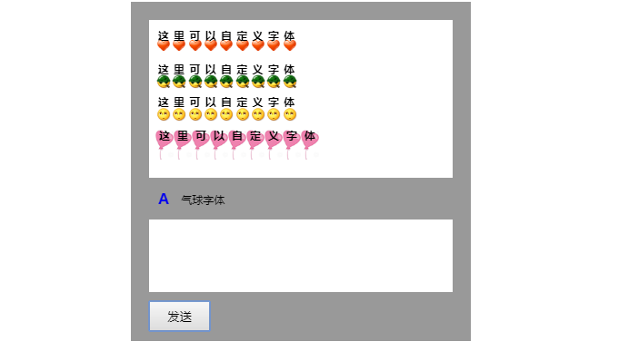 点击预览 -
图片跟随鼠标轨迹移动
工具：原生javascript
这个效果有两种模式，第一种是点击页面的任意位置，图片则会运动到指定位置。第二种是鼠标可在页面上画出运动轨迹，鼠标则会按照轨迹运动。配合js运动来实现。
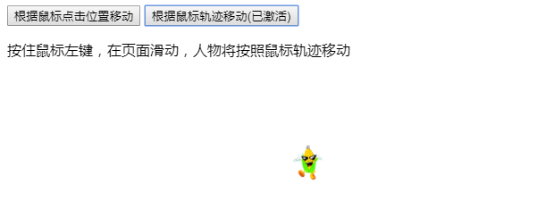 点击预览 -
商品分类筛选
工具：原生javascript
每一个类别只能选择一个项目，选中的会变色，并且会出现在上面的已选择中，当点击已选择的项目后面的x号时，该选项消失，同时颜色高亮也消失。
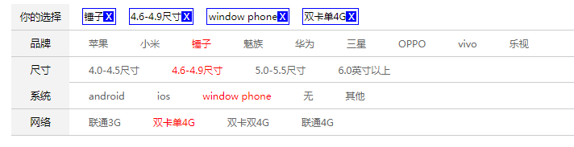 点击预览 -
图片无缝滚动
工具：原生JS
这个效果主要是通过对元素left值的改变和监控来实现。当元素运动到第一张图片和最后一张图片的位置时，改变他的left值。
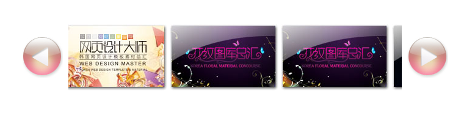 点击预览 -
纯CSS实现图片切换效果
工具：css
配合单选框，以及css动画效果通过控制当前图片的高度来实现切换。
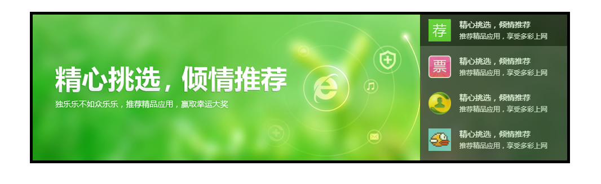 点击预览 -
3D翻牌效果
工具：css
通过配合css的transform动画效果以及css3提供的3d属性来实现空间上的远近关系。
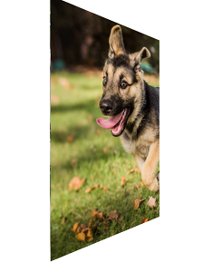 点击预览 -
笑起来的猫
工具：html和css
猫的头像是用html配合css画出来的，配合css的动画效果实现猫咪笑起来的效果。
点击预览 -
旋转的立方体
工具：css
使用animation自定义动画，控制不同的百分比时元素旋转到的位置。
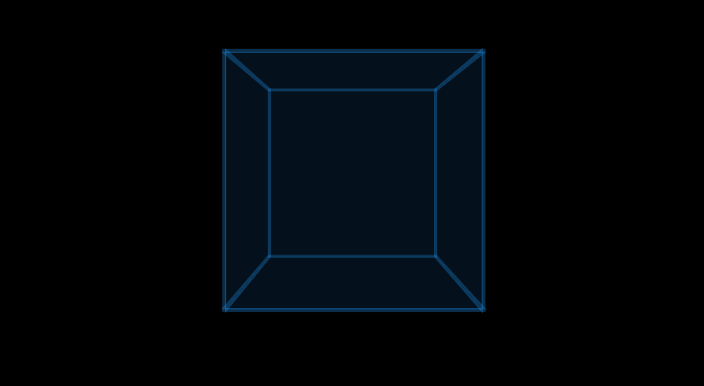 点击预览 -
登录框
工具：css 和 Jquery
引用强大的animate.min.css库来实现流畅的动画效果，配合Jquery验证输入内容是否合法
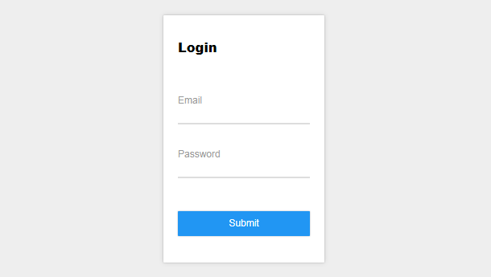 点击预览 -
html+css绘制Mac
工具：html+css
这个效果主要是用css3的阴影效果来实现的。
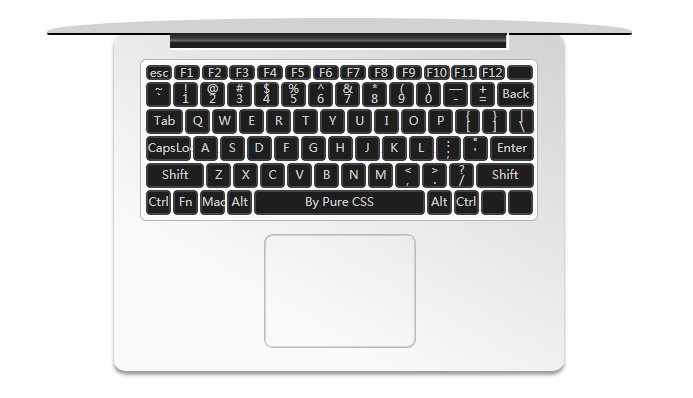 点击预览 -
伸缩相册
工具：原生JS
每次点击的时候改变图片的left值来实现。
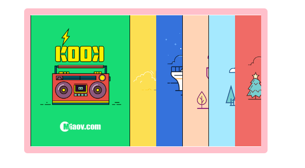 点击预览 -
JS实现星光闪烁
工具：原生JS
主要是用随机函数，以及控制图片的left值来实现闪烁的效果。
点击预览 -
操作云盘文件夹
工具：ES6
这个主要运用了创建子节点来创建新的文件夹，碰撞检测来实现鼠标画框来选中文件夹。
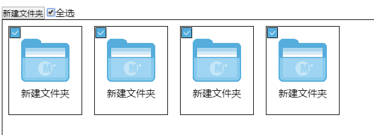 点击预览
项目展示
学习过程中做的一些项目
-

简易单页应用后台系统 2013.12.11 ~ 2015.10.09 项目工具： 使用vue-cli创建项目，用vue-router创建单页应用，结合localStorage来存储登录状态和用户名信息。使用钩子函数来监控路由信息的变化。
项目概述：在进入页面时根据点击的内容来判断是否需要登录，通过给路由配置meta来记录，配合beforeEach钩子函数和localStorage来实现页面跳转。进入我的文档后，点击子菜单的运动效果通过引用tween.js，搭配钩子函数监控路由信息的变化来实现。 -
基于Vue的移动端酷狗音乐 项目工具：使用vue-cli搭建项目，用vue-router配置单页应用，用proxy代理跨域请求数据，用axios来对请求回来的数据进行拦截处理。运用Mint-ui组件库来构建样式。 项目概述：从m.kugou.com中拿到接口数据，在config中配置proxy代理，在拿到接口数据后使用axios对接口数据做进一步处理，之后在每一个组件中把获取到的数据展示在页面中。
-
基于Vue实现的TodoList 项目工具：引入vue.js文件，主要运用vue的指令，使用localStorage来存取数据。用watch对属性的变化进行深度监控。 项目概述：在文本框中输入项目，回车后会出现在任务列表中，当点击任务列表前面的单选框时，即表示该任务已完成，会出现在完成的任务中。点击每一项的x可以删除该项。用localStorage实现数据的存储，当关闭页面之后数据不会丢失。
-
Cinstar网站主页 页面中的交互效果使用原生JS实现，页面中的图标是引用阿里矢量图标库中现有的图标作为font-face。css的编写是使用less工具。页面中主要用到的是js中的鼠标事件，以及选项卡，定时器，还有css的transform动画。